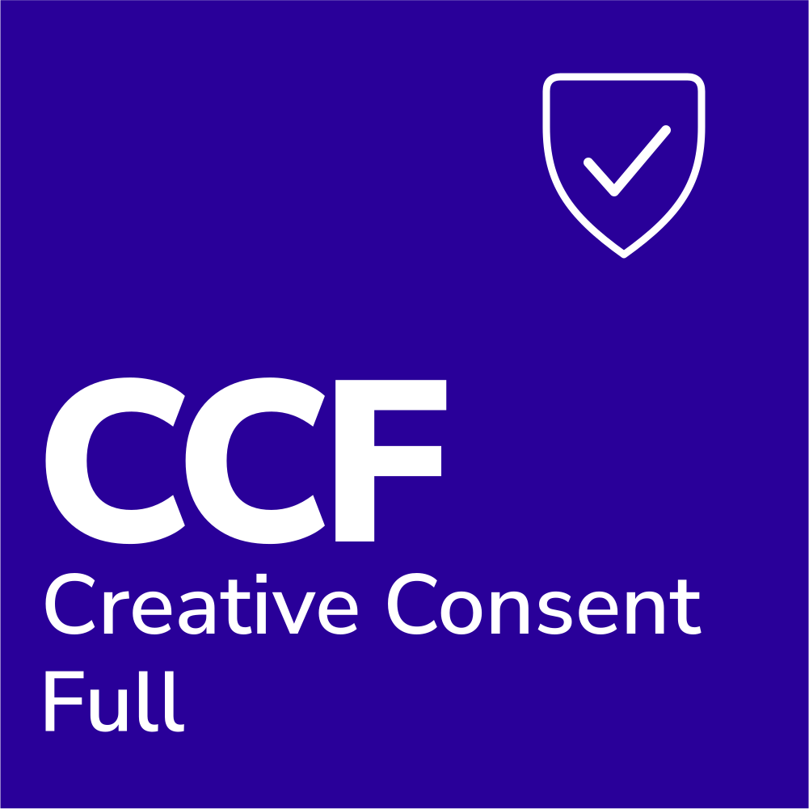
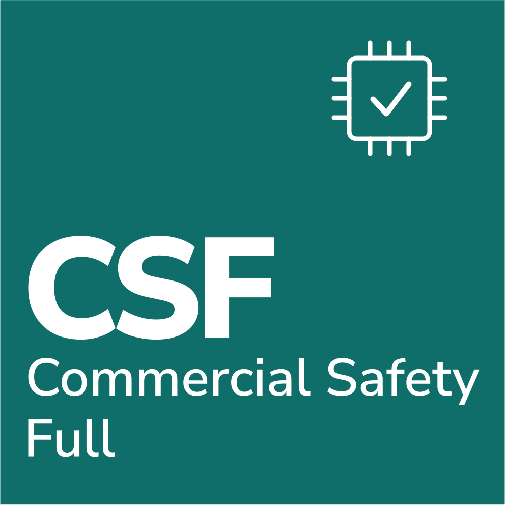

A content provenance certification for AI is an independent check of where content came from and how AI was involved in making it or training on it. Two layers work together. Technical standards such as C2PA attach a signed history to a file, known as Content Credentials. Certifications such as Credtent's Creative Origin and Commercial Safety badges add an expert review of human authorship and of whether AI training data was licensed.
Provenance was once a term for museums and auction houses, and it now decides whether a publisher can sell a book as human written, whether a platform can show creators their choices are honored, and whether an AI company can show counsel what its model learned from. This guide explains both layers and where Credtent fits.
What does C2PA do for content provenance?
C2PA, the Coalition for Content Provenance and Authenticity, publishes an open technical standard for attaching tamper-evident provenance records, called Content Credentials, to media files. A Content Credential records what the signing device or application reports about a file's history, such as the tool that created or edited it. Claims that no tool observed, such as whether a person composed a text or whether a model's training data was licensed, call for a separate review.
Content Credentials are valuable because they travel with the file and show when it has been altered. Camera makers, editing tools, and publishers are adopting them. A certification program complements that record by asking questions a file cannot answer about itself.
How does Credtent's certification work alongside C2PA?
Credtent is a member of the Content Authenticity Initiative (CAI), the community Adobe founded to promote adoption of Content Credentials. Credtent's badges sit alongside that technical layer and cover questions it leaves to people: Creative Origin records the role of AI in a creative work, and Commercial Safety reviews whether an AI company's training practices respect licensing and creator opt-outs. A single work can carry both kinds of record.
The two layers answer different questions. A Content Credential can show that an image was exported from a particular editor on a particular date. A certified Creative Origin badge shows that a trained reviewer examined the drafts, attestations, and AI use policy behind the work and recorded the result in the Credtent registry, so each record strengthens the other.
What are Credtent's three badge systems?
Credtent runs three badge systems, one for each side of the rights economy. Creative Origin, for creators and publishers, discloses how AI was involved in a work: Human Composed, AI-Assisted, AI-Generated, or Legacy Creation. Creative Consent, for platforms, rates how a platform treats creator content and AI training choices: Full, Optional, or No Protection. Commercial Safety, for AI companies, certifies training practices at Full, Guardrail, or Provisional level.
- Creative Origin attaches to a specific work and names the part it describes (text, art, music, code, video, or voices). Self-declared badges are free. Human Composed and AI-Assisted can be expert-certified with a public registry record.
- Creative Consent rates a platform's terms. Full Protection means the platform does not use creator content for AI training, does not use it internally for generative AI, and does not share it with third parties for training. Optional Protection means users get a choice, with a clear, cost-free, and simple opt-out. No Protection means content is used for training without consent or compensation and without an opt-out.
- Commercial Safety reviews an AI company's training data and safeguards.



See the badge systems overview for details.
Who needs a content provenance certification?
Three groups gain the most from provenance certification. Publishers and creators use it so readers, buyers, and platforms can trust how a work was made. Platforms use it to show creators that consent choices about AI training are honored. AI companies use it to show counsel, customers, and regulators what their models were trained on, which matters more as disclosure rules such as EU AI Act Articles 50 and 53 apply.
For AI companies, a certification record pairs with licensing documentation. Credtent licenses include the rights the contracting holders warranted, a named manifest, and a disclosure pack counsel can use for EU AI Act Article 53 and California AB 2013 filings, while the obligations under those statutes remain the developer's own.
How is provenance certification different from AI detection?
AI detection guesses at origin from the finished content, by measuring how statistically predictable it is. Provenance certification examines the record of how the content was made and who stands behind it. Credtent uses detectors as one triage input, then an expert reviewer decides based on drafts, version history, attestations, and the AI use policy. The detector score stays in the audit trail and never appears on the certificate.
The practical difference shows up with a false positive: a detector score alone can mislabel careful human writing, while a process record lets a reviewer see the work being made.
Frequently asked questions
Which provenance standards community is Credtent part of?
Credtent is a member of the Content Authenticity Initiative (CAI), the community that promotes adoption of Content Credentials. C2PA is the affiliated body that writes the technical standard. Credtent's badges are designed to work alongside that standard.
Does a Credtent badge replace Content Credentials?
A Credtent badge works alongside Content Credentials. A file can carry a signed C2PA record of its technical history and a Credtent badge recording the result of an expert review of authorship or licensing, and each answers a different question.
Are provenance badges free?
Credtent's disclosure badges are free to use. Expert-led certification is paid, because expert review is real labor. Creative Origin self-declared badges can be built with the free Credtent badge builder.
Does Commercial Safety certification remove an AI company's legal risk?
A Commercial Safety certification records what Credtent reviewed about a model's training practices at the level awarded. It supports the company's own compliance work and does not replace legal advice. For licensed data, indemnity, if any, is only as written in the signed license.
What does Creative Consent rate?
Creative Consent rates how a platform treats creator content, data, and metadata, and whether it respects creators' choices about AI training. Platforms receive Full Protection, Optional Protection, or No Protection.